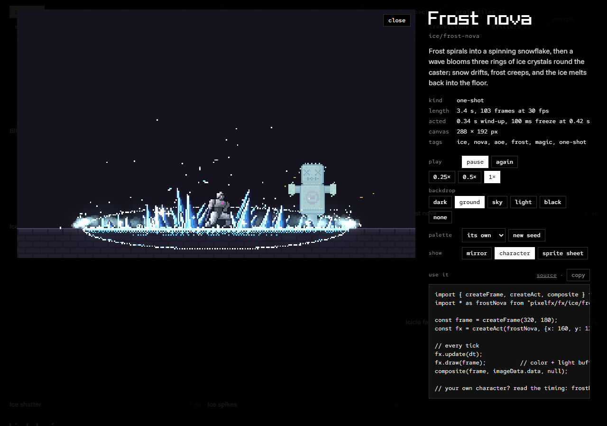
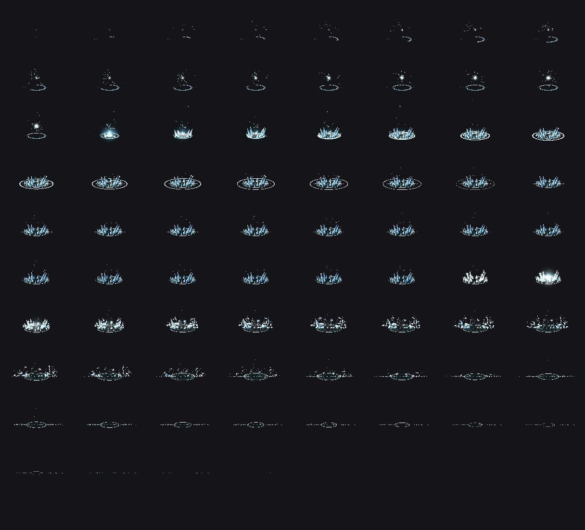
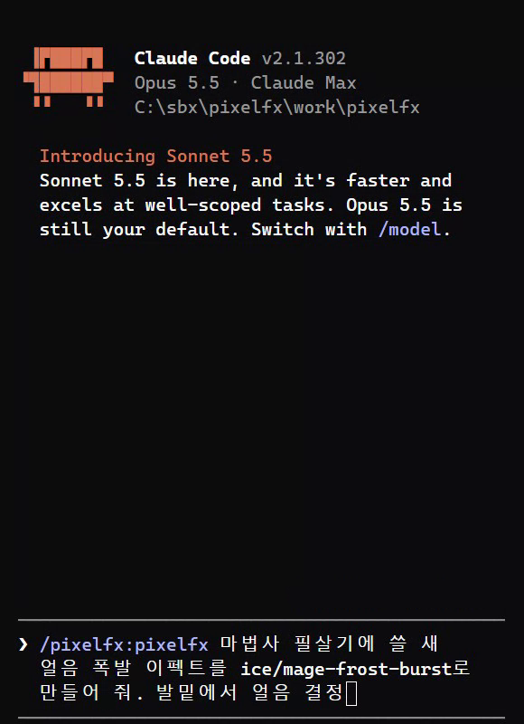
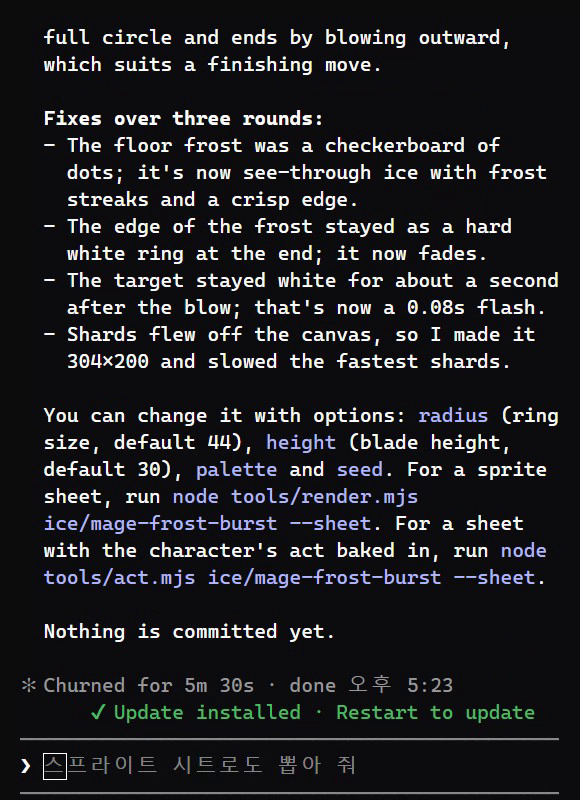

pixelfx는 게임용 도트(픽셀) 이펙트 244개를 모아 둔 무료 오픈소스예요(MIT). 불·폭발·얼음·번개·마법·날씨·UI·공격 동작까지, 이펙트 하나하나가 그림 파일이 아니라 짧은 코드라서 브라우저에서 바로 틀어 보고, 색을 바꾸고, 내 게임에 넣을 그림 묶음(스프라이트 시트)으로 뽑을 수 있어요. 여기에 클로드 코드 스킬이 같이 들어 있어서, 없는 이펙트는 말로 시키면 클로드가 초안을 만들고 → 그려 보고 → 눈으로 확인하고 → 고치기를 반복해 새로 만들어요. 갤러리와 스킬은 저희가 직접 써 봤고, 게임 엔진에 넣는 부분은 공식 문서 기준이에요.
갤러리를 열면 맨 위에 분류 칩(moves·fire·explosions·ice·lightning…)과 검색칸이 있어요. 칩을 누르면 그 분류로 내려가고, 카드는 전부 움직이는 상태라 보면서 고르면 돼요. 마음에 드는 카드를 누르면 크게 열려요.
상세 화면 오른쪽(폰에선 아래)에서 바로 바꿔 볼 수 있어요. play: 0.25×·0.5×로 느리게 보기, again 처음부터 / backdrop: 바탕(땅·하늘·밝게·검정·없음) / palette: 원래 색 + 색 묶음 27가지(fire·lava·ice·neon·gold…) — 코드를 안 고치고 색만 바뀌어요 / new seed: 모양이 조금 다른 같은 이펙트 / mirror: 좌우 뒤집기 / character: 회색 인형과 허수아비 켜고 끄기.

상세에서 sprite sheet를 누르면 모든 프레임을 한 장에 펼친 그림이 나와요(갤러리에선 그 그림을 저장). 투명 배경 PNG와 프레임 위치·길이가 적힌 JSON을 같이 받으려면 pixelfx 폴더에서 아래 '복사해서 쓰기'의 시트 명령을 써요. JSON은 Aseprite 형식이라 Phaser 아틀라스, Godot·Unity의 Aseprite 가져오기에서 읽혀요. 가져올 때는 기준점을 JSON의 meta.pixelfx.pivot(보통 발밑)으로, 필터는 nearest(흐림 없음)·압축 없음으로, 재생은 meta.pixelfx.fps로 맞춰요. (엔진에 넣는 과정은 공식 문서 기준)

코드를 그대로 써요. 의존성이 없어요. 'npm i github:patch-gg/pixelfx'로 받거나 src/core 폴더와 쓸 이펙트 파일만 복사해요. 매 프레임 fx.update(dt) → 캐릭터 뒤에 그릴 것(back) → 내 캐릭터 → 앞에 그릴 것(front) → composite 순서로 그려요. 상세 화면 아래 'use it' 칸의 copy를 누르면 그 이펙트용 코드가 복사돼요. 캐릭터 동작까지 같이 틀려면 createFx 대신 createAct를 써요. (공식 문서 기준)
Claude Code를 열고 아래 두 줄을 한 줄씩 입력해요(또는 저장소의 skills/pixelfx 폴더를 ~/.claude/skills/에 복사). 스킬은 pixelfx 폴더 안에서 일해요 — 폴더가 없으면 스킬이 git clone부터 해요. 별도 설치 단계는 없고 Node만 있으면 돼요. 확실히 스킬을 쓰게 하려면 요청 앞에 /pixelfx:pixelfx 를 붙여요.

한 문장에 ① 무엇(얼음 폭발·코인 반짝임) ② 어떻게 움직이나(발밑에서 고리로 터지게, 위로 솟았다 흩어지게) ③ 어디에 쓰나(마법사 필살기, 아이템 줍기) ④ 끝에 무엇을 받을지(--gif 미리보기, 스프라이트 시트)를 넣어요. 스킬은 먼저 244개 중에 비슷한 게 있는지 찾아요 — 대부분은 있는 이펙트에 색·크기 옵션만 바꾸면 끝나요. 없을 때만 새로 만들어요.
스킬은 records/<분류>/<이름>/ 폴더에 결과를 남겨요. contact.png = 프레임을 시간 순으로 세로로 늘어놓은 그림(스킬이 이걸 열어 보며 고쳐요), anim.gif = 움직이는 미리보기, src/fx/<분류>/<이름>.js = 이펙트 코드. 끝나면 몇 번째 판에서 무엇을 고쳤는지, 바꿀 수 있는 옵션(크기·높이·palette·seed), 시트 명령을 정리해 줘요.
같은 대화에 고칠 점만 말해요. 공식 예: '이 타격 이펙트는 붕 뜬 느낌이야. 더 묵직하게', '이 주문에 준비 동작을 넣고 적이 맞고 반응하게', '코인 줍기 반짝임을 다섯 가지로 만들고 제일 나은 두 개 보여 줘'. 스킬 규칙상 그려 보고 → 보고 → 고치기를 최소 세 번 돌고, 마지막엔 검사 도구(check.mjs)로 화면 밖으로 새는 것·반복 이음새·무작위 값을 확인해요.
쓰기 좋은 때: 인디·게임잼처럼 이펙트를 그릴 사람이 없을 때, 도트 게임에 타격감(준비 동작·맞는 순간 멈춤·허수아비 밀림)까지 한 번에 넣고 싶을 때, 같은 이펙트를 색만 바꿔 여러 속성(불·얼음·독)으로 쓸 때. 안 맞는 때: 도트가 아닌 3D·고해상도 그림체 게임, 손으로 그린 특정 그림체를 그대로 맞춰야 할 때(스킬 결과도 결국 눈으로 보고 고르는 일이 남아요).
① 격리된 Claude Code에 플러그인 설치 → pixelfx 폴더에서 '/pixelfx:pixelfx 마법사 필살기에 쓸 새 얼음 폭발 이펙트를 ice/mage-frost-burst로 만들어 줘. 발밑에서 얼음 결정이 고리로 터지게. 다 되면 --gif로 렌더해 줘.' ② 스킬이 초안 코드를 쓰고, 렌더해서 contact.png를 열어 보며 세 번 고침 — 바닥 서리가 점무늬 → 투명한 얼음, 끝에 남던 흰 고리 → 흐려지게, 1초쯤 하얗게 남던 허수아비 → 0.08초 번쩍, 화면 밖으로 튀던 파편 → 캔버스를 304×200으로 넓히고 속도 줄임 ③ 결과: 룬 고리가 그려지고 → 얼음 칼날 두 겹이 솟고 → 하얗게 번쩍인 뒤 파편으로 흩어지는 3.2초짜리 이펙트 ④ 같은 명령으로 스프라이트 시트까지. 요청부터 끝까지 약 5분 30초.

브라우저로 열기 — 설치 없음
https://patch-gg.github.io/pixelfx/
Claude Code 안에서 한 줄씩
/plugin marketplace add patch-gg/pixelfx /plugin install pixelfx@pixelfx
빈칸만 바꿔서 — 요청 앞에 /pixelfx:pixelfx
/pixelfx:pixelfx [어디에 쓰나: 마법사 필살기]에 쓸 [무엇: 얼음 폭발] 이펙트를 만들어 줘. [어떻게 움직이나: 발밑에서 얼음 결정이 고리로 터지게]. 다 되면 --gif로 렌더해 줘.
내 게임 폴더에서
/pixelfx:pixelfx Add a frost nova to my mage's ultimate.
만든 이펙트가 가벼워 보일 때
This hit effect feels floaty. Make it punchier.
방향을 못 정했을 때
Make five takes on a coin pickup sparkle and show me the best two.
Godot 등 다른 엔진
Export the fire and explosions categories as sprite sheets for Godot.
pixelfx 폴더 터미널에서 — 이름은 갤러리 상세의 회색 글씨(예: ice/frost-nova)
node tools/render.mjs ice/frost-nova --sheet
palette = 어두운 색 → 밝은 색 순서
node tools/render.mjs fire/torch --gif --opts '{"palette": ["#102","#215","#43a","#8cf","#cff","#fff"]}'도움이 되셨다면
@ai.antenna.kr
에서 바로 쓰는 AI 활용법을 계속 올립니다.